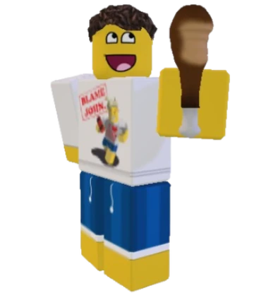

Shedletsky
"Death before dishonor."
Shedletsky is a retired roblox admin who has sworn to protect the other survivors. He fulfills this role by using one of his swords to stun those causing harm. Additionally, he is known for hosting chicken eating competitions, being the champion beforehand.